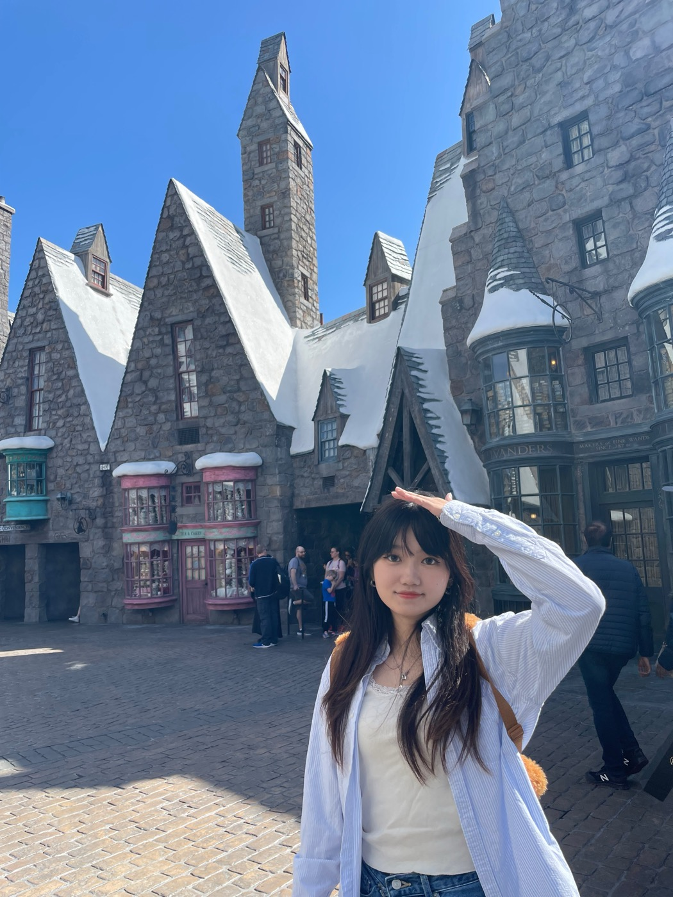

Curious mind.
Hands-on maker.
Hi, I'm Yixuan — I like making things, and figuring out what makes them work for people.
That curiosity takes me from a conversation to a sketch, from a wireframe to a prototype. I enjoy giving abstract ideas a shape that people can try, question, and help make better.
Outside of digital design, I run PinkyDoggy, my small creative business. It gives my playful side a place to grow and brings me closer to the people I create for. I also love working with clay, punch needle, and wool felt, and capturing everyday moments on film.
- How I think
- Listen closely. Find the story behind the need.
- How I make
- User flows, wireframes, and interactive prototypes.
- How I work
- Build together. Test ideas. Refine the details.

1 / 3click or drag to flip
My journey so far.
A background in communication, a practice in design, and a curiosity that keeps growing.
Work & community
- CLIENT PROJECT
UI/UX Designer
First Nations Health Authority
May – August 2026
Designed a responsive mental health provider search experience for First Nations communities. Combined user research, usability testing, and high-fidelity prototyping, collaborating with designers, developers, and FNHA stakeholders to balance accessibility, cultural safety, and technical constraints.
- CLIENT PROJECT
UX Designer
Huawei
January – April 2026
Led interviews, observational studies, and exploratory research into AI-driven mobile interactions. Designed and prototyped experimental OS-level concepts using gestures, motion, spatial effects, and generative AI, then refined interaction patterns through usability testing and participant feedback.
- DESIGN COMMUNITY
Social Media Marketing
Vancouver Service Design Jam
January – March 2026
Created social media content and coordinated sponsor communications for the local service design community, helping connect people around collaborative design and making.
- WORK EXPERIENCE
Marketing Associate
SFU VentureLabs
June – December 2024
Designed digital assets, campaign materials, and responsive homepage layouts. Used personas and customer journeys to shape content for B2B and individual audiences, and drew on Google Analytics and Buffer to refine digital communications.
- WORK EXPERIENCE
Public Relations Assistant
CJSF 90.1 FM
September – December 2023
Created layouts, graphics, and content for digital and print communications. Edited newsletters, press releases, and website updates for clarity and consistent messaging, and reviewed audience response to inform future communications.
Education
- GRADUATE EDUCATION
Master of Digital Media
Centre for Digital Media
September 2025 – June 2027 (expected)
Developing an interdisciplinary digital media practice through collaboration across design and technology.
- UNDERGRADUATE EDUCATION
Bachelor of Arts
Simon Fraser University
September 2020 – June 2025
Joint Major in Communication and Interactive Arts & Technology, with a concentration in Design. Built a foundation in user experience, visual storytelling, and interactive media.
Dean’s Honour Roll · Spring 2024 & Spring 2025